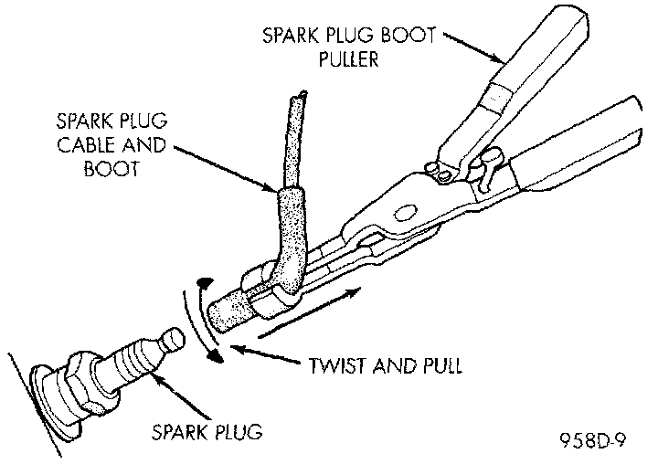
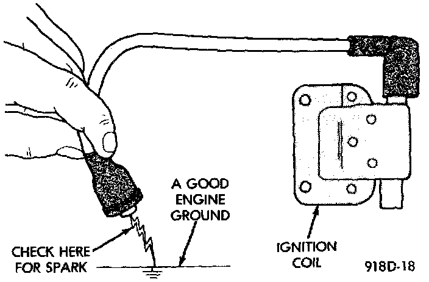

Testing For Spark at Coil
TESTING FOR SPARK AT COILFig. 5 Cable Removal:

CAUTION: When disconnecting a high voltage cable from a spark plug or from the distributor cap, twist the rubber boot slightly (1/2 turn) to break it loose (Fig. 5). Grasp the boot (not the cable) and pull it off with a steady, even force.
Fig. 6 Checking For Spark - Typical:

1. Disconnect the ignition coil secondary cable from center tower of the distributor cap. Hold the cable terminal approximately 12 mm (1/2 in.) from a good engine ground (Fig. 6).
WARNING: Be very careful when the engine is cranking. Do not put your hands near the pulleys, belts or the fan. Do not wear loose fitting clothing.
2. Rotate (crank) the engine with the starter motor and observe the cable terminal for a steady arc. If steady arcing does not occur, inspect the secondary coil cable. Refer to Spark Plug Cables in this group. Also inspect the distributor cap and rotor for cracks or burn marks. Repair as necessary If steady arcing occurs, connect ignition coil cable to the distributor cap.
3. Remove a cable from one spark plug.
4. Using insulated pliers, hold the cable terminal approximately 12 mm (1/2 in.) from the engine cylinder head or block while rotating the engine with the starter motor. Observe the spark plug cable terminal for an arc. If steady arcing occurs, it can be expected that the ignition secondary system is operating correctly (If the ignition coil cable is removed for this test, instead of a spark plug cable, the spark intensity will be much higher). If steady arcing occurs at the spark plug cables, but the engine will not start. Refer to Powertrain Management/Computers and Control Systems/Testing and Inspection.
Testing and Inspection